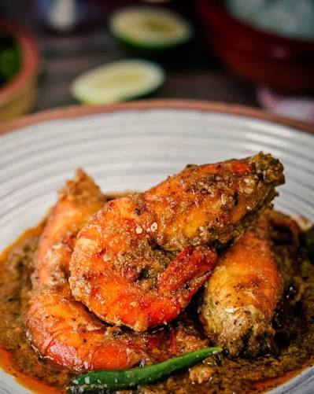

Home
Chingri Malaikari

Description
Chingri malaikari is an iconic Bengali prawn curry made by cooking large tiger prawns
Or giant freshwater prawns (golda chingri) in a super-subtle, super-creamy coconut-milk sauce.
Ingredients list
Serves 6 Servings
- 1 kg bagda or golda chingri (giant tiger or freshwater prawns)
- 50 g vegetable oil
- 10 g ghee
- 200 g onion paste
- 20 g ginger paste
- 4 g turmeric
- 1 tsp kashmiri red chilli powder
- 75 g yoghurt
- 6 pcs green chillies
- 300 g coconut milk (first-press)
- 200 g coconut milk (second-press)
- 36 g sugar
- ½ tsp bengali garam masala
Steps
- Shell and devein the prawns, leaving the flavourful head intact. You may
remove the stomach of the prawn, located near its head. We are leaving
the shells on, but you may peel them off if you like.
- Coat prawns with 1 tsp salt and ½ tsp turmeric powder, and set aside.
- In a grinder jar, add onions and blitz them to a fine paste. Also extract
Coconut milk, reserving the first-press (thick) and second-press
(thinner) milk in separate jars, and keep it ready.
- Heat vegetable oil in a pan. Once hot, lower the prawns one by one, and
fry them in batches for about 45 seconds on each side. The longer you
cook prawns the tougher they’ll become, so remove them from the heat
Immediately and set aside.
- Now add ghee to the residual oil. Temper with dried red chillies, bay leaf,
cardamom, cloves, and cinnamon.
- Add onion paste along with sugar, and fry for about 8 minutes until the onions are brown.
- Add ginger paste and fry for another 3–4 minutes, after which add
turmeric and kashmiri red chilli powder. Stir intermittently so that the
spices don’t stick to the bottom of the pan. When they do, add a splash
of the thin, second-press coconut milk to loosen the mixture up and help
fry it. Also add three slit green chillies and salt now.
- Once oil starts separating from the spices, beat the yoghurt until it is
lump free and add it to the pan. Drop the heat and stir vigorously to
prevent the yoghurt from splitting. Cook it for 3–4 minutes.
- Add the second-press (thin) coconut milk and simmer for about 2
minutes before adding the first-press (thick) coconut milk. Once it
comes to a boil, add the fried prawns.
- Allow the prawns to bubble in the curry, covered, for no more than 5
Minutes.
- Finish off with garam masala before serving.
Done